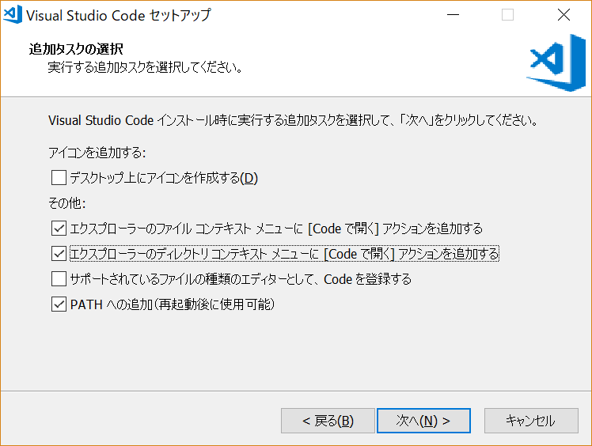
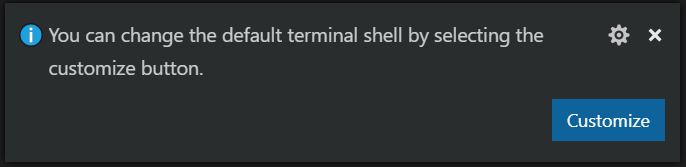
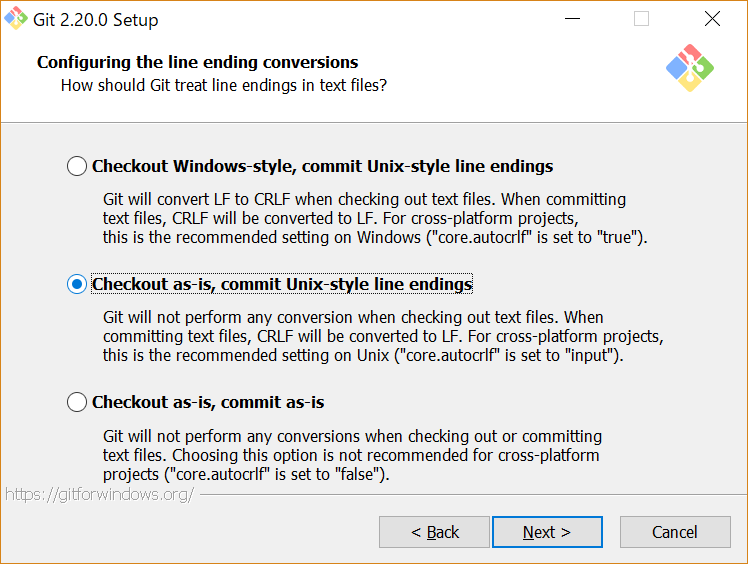

Windows 10 で Laravel を開発する
Update: 2020-07-11
私自身は「おうちにかえってからは Windows なんか見たくない」と言って Mac を使っているのですが、 世の中そんな人ばかりではないので Windwos 上で Laravel を使う開発の環境を準備する手順を確認してみました。
エディタ
エディタは Mac で使っているのと同じ Visual Studio Code にします。
ダウンロードページを見ると User Installer というものがあるんですね。
仮想デスクトップ等との関係かな。
https://code.visualstudio.com/Download
から VSCodeUserSetup-x64-1.30.1.exe をダウンロードしてインストールしました。
オプションは自分の好みで下図の選択だけ、あとはデフォルトです。

Windows 版の場合、コンソールの表示は [Ctrl]+@ ですが、
PowerShell がデフォルトですね。右下に

のような表示が出るので、そこで設定を変更できます。また
File --> Preferences --> Settings --> Features --> Terminal
の Integrated > Shell: Windows でも変更できます。
コマンドプロンプトの場合は C:\Windows\System32\cmd.exe
PowerShell の場合は C:\Windows\System32\WindowsPowerShell\v1.0\powershell.exe
です。
PHP
PHP は https://windows.php.net/download#php-7.2 から
ZIP 圧縮されたバイナリをダウンロードして C:\php に解凍します。
開発環境は Thread Safe 版でいいでしょう。今回は
php-7.2.13-Win32-VC15-x64.zip を使いました。
環境変数 PATH に C:\php を追加し、
C:\php\php.ini-development をコピーして C:\php\php.ini を作ります。
C:\php\php.ini の中を見ると拡張モジュールがすべて無効になっています。
以下のようなものをコメント外して有効にすればよいと思います。
extension=bz2
extension=curl
extension=fileinfo
extension=gd2
extension=gettext
extension=gmp
extension=intl
extension=ldap
extension=mbstring
extension=exif
extension=openssl
extension=pdo_mysql
extension=pdo_pgsql
extension=pdo_sqlite
extension=shmop
extension=xmlrpc
extension=xsl
<?php phpinfo(); ?>
のようなファイルを作ってそのフォルダに CD して
php -S localhost:8000
を実行して、ブラウザで http://localhost:8000 が表示できれば OK です。
phpunit のために xdebug というモジュールが必要なので、
xdebugをwindowsのphpに設定する方法で悩んだ件
を参考に導入しました。
php -i の実行結果を
https://xdebug.org/wizard.php
に貼り付けて分析してもらうと、
Instructions
Download php_xdebug-2.6.1-7.2-vc15-x86_64.dll
Move the downloaded file to C:\php\ext
Edit C:\php\php.ini and add the line
zend_extension = C:\php\ext\php_xdebug-2.6.1-7.2-vc15-x86_64.dll
と結果が出るのでその通りにします。
zend_extension の設定の追加は、上記の extension の後が無難そうです。
composer は https://getcomposer.org/download/ から
Composer-Setup.exe をダウンロードしてインストールします。
PATH が通っているところにある php.exe を自動検出して設定してくれます。
コマンドプロンプトで composer を実行して Version と Usage が正常に表示されることを確認します。
git
git の GUI ツールはたくさんありますが、どれがいいかよくわからないのでとりあえず本家サイト
https://git-scm.com/download/win から
Git-2.20.0-64-bit.exe をダウンロードしてインストールしました。
デフォルトの設定を変更したのは改行コードの扱いだけです。

その他
テスト用に SQLite を使うので、 DB Browser for SQLite をインストールしました。
Windows 10 は標準の ssh クライアントがあるのですね ( Windows10標準のSSHクライアントを使ってみた ) 。ssh-keygen も入っていました。
C:\Users\michi>ssh-keygen
Generating public/private rsa key pair.
Enter file in which to save the key (C:\Users\michi/.ssh/id_rsa):
ssh-agent はサービスとして常駐する形になります。
サービス "OpenSSH Authentication Agent" ( ssh-agent )
を自動実行するように設定して開始すれば
ssh-add コマンドが使えるようになります。
サービスの設定をデフォルトに戻す手順は http://batcmd.com/windows/10/services/ssh-agent/ です。
Laravel のプロジェクトを作ってみる
こんな感じで問題なくできました。
composer create-project --prefer-dist laravel/laravel blog
cd blog
php artisan serve
Tamuro のソースを入れてみる
こんな感じで問題なく動きました。
PowerShell の場合
git clone https://github.com/MichinobuMaeda/tamuro
cd tamuro
composer install
Copy-Item .env.local .env
New-Item storage\tamuro.sqlite -ItemType File
php artisan list
php artisan migrate:refresh ; .\vendor\bin\phpunit --coverage-html coverage
php artisan migrate:refresh --seed ; php artisan serve --host localhost --port 8000
CMD.exe の場合
git clone https://github.com/MichinobuMaeda/tamuro
cd tamuro
composer install
copy .env.local .env
どうにかして 0byte の storage\tamuro.sqlite を作る。
php artisan list
php artisan migrate:refresh && .\vendor\bin\phpunit --coverage-html coverage
php artisan migrate:refresh --seed && php artisan serve --host localhost --port 8000
Tag: php phpunit powershell laravel windows git sqlite